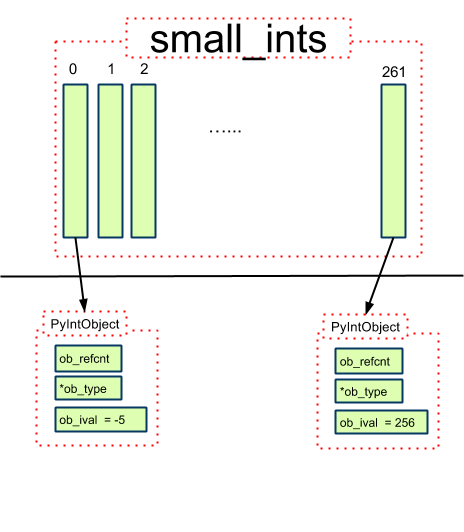

最近学习python，发现整数比较时一个有趣的现象：
a = 256
b = 256
print id(a)
print id(b)
print(a == b)
print(a is b)
print(id(a) == id(b))
print(id(a) is id(b))
c = 257
d = 257
print id(c)
print id(d)
print(c == d)
print(c is d)
print(id(c) == id(d))
print(id(c) is id(d))
在pycharm中运行的结果是：
32019104
32019104
True
True
True
False
40550424
40550424
True
True
True
False
而在Python IDE中运行：
>>> a = 256
>>> b = 256
>>> a == b
True
>>> a is b
True
>>> id(a)
32346576L
>>> id(b)
32346576L
>>> c = 257
>>> d = 257
>>> c == d
True
>>> c is d
False
>>> id(c)
39891736L
>>> id(d)
39891712L
为什么同样是Python2.7.14，得出的结果迥然不同呢？
在Python中一切都是对象，因此整数也是对象。对象之间比较是否相等可以用==，也可以用is，两者的区别主要是：
- is比较的是两个对象的id值是否相等，也就是比较俩对象是否为同一个实例对象，是否指向同一个内存地址。
- ==比较的是两个对象的内容是否相等，默认会调用对象的__eq__()方法。
因此，代码段中a == b很好理解，因为两个对象的值都是256， 而a is b返回True， 说明a和b都是指向同一对象的。但是当值为257时，为什么指向的不是同一个对象呢？
问题一：256和257，差别在哪里？
出于对性能的考虑，Python内部做了很多的优化工作，对于整数对象，Python把一些频繁使用的整数对象缓存起来，保存到一个叫small_ints的链表中，在Python的整个生命周期内，任何需要引用这些整数对象的地方，都不再重新创建新的对象，而是直接引用缓存中的对象。Python把这些可能频繁使用的整数对象规定在范围[-5, 256)之间的小对象放在small_ints中，注意左闭右开。但凡是需要用些小整数时，就从这里面取，不再去临时创建新的对象。因为257不再小整数范围内，因此尽管a和b的值是一样，但是他们在Python内部却是以两个独立的对象存在的，各自为政，互不干涉。
源码位置：Include/intobject.h | Objects/intobject.c
小整数对象池：
小整数对象池就是一个PyIntObject指针数组
#ifndef NSMALLPOSINTS
#define NSMALLPOSINTS 257
#endif
#ifndef NSMALLNEGINTS
#define NSMALLNEGINTS 5
#endif
#if NSMALLNEGINTS + NSMALLPOSINTS > 0
/* References to small integers are saved in this array so that they can be shared. The integers that are saved are those in the range -NSMALLNEGINTS (inclusive) to NSMALLPOSINTS (not inclusive).*/
static PyIntObject *small_ints[NSMALLNEGINTS + NSMALLPOSINTS];
#endif
其结构如下：

问题二：都是257，is结局为啥不一样？
其实答案就是如此简单：
对于Python而言，存储好的脚本文件（Script file）和在Console中的交互式（interactive）命令，执行方式不同。对于脚本文件，解释器将其当作整个代码块执行，而对于交互性命令行中的每一条命令，解释器将其当作单独的代码块执行。而Python在执行同一个代码块的初始化对象的命令时，会检查是否其值是否已经存在，如果存在，会将其重用（这句话不够严谨，后面会详谈）。所以在给出的例子中，文件执行时（同一个代码块）会把a、b两个变量指向同一个对象；而在命令行执行时，a、b赋值语句分别被当作两个代码块执行，所以会得到两个不同的对象，因而is判断返回False。